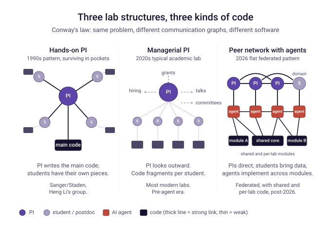

Conway's Law and the Shape of Computational Genomics Software
Written with research and prose-drafting help from Claude, an AI assistant from Anthropic. The thinking and the case studies are ours; a lot of the synthesis came from working through the material with Claude.
TL;DR
- Conway's Law: software inherits the shape of the organization that made it. The post applies this to computational genomics software.
- A fifty-year tour of genome assemblers and DNA foundation models — Sanger's lab in 1977, Celera in 2000, the short-read era, PacBio's HGAP and FALCON, hifiasm and Verkko, and Evo 2 — shows different organizational types producing visibly different software for the same underlying problem.
- The FALCON case at PacBio anchors the deep argument: the same Conway pattern operated at three nested scales (academia, the company, the assembler sub-team), each deprioritizing assembly for its own reasons, and the work happened anyway.
- In the agentic era, an AI agent occupies the communication-graph slot that external open-source dependencies once did — but with opaque, vendor-shaped properties that DALIGNER-class dependencies didn't have. Conway predicts the artifacts will reflect that substitution.
- The forward-looking prediction: academic labs will split into two stable archetypes. Managerial-PI labs will use agents to produce polished but architecturally weaker software at scale; hands-on-PI labs will use agents to extend their own technical reach. The field-defining work will come disproportionately from the second group.
- Caveat: Conway's Law is a strong heuristic, not a deterministic law. The graph metaphor can be tautological. Many other forces (regulation, hardware, market, individual talent) also shape software. Treat the predictions as tendencies.

1. Conway's Law and what it predicts
In April 1968, Mel Conway published "How Do Committees Invent?" in Datamation — a paper Harvard Business Review had rejected on the grounds that he "had not proved his thesis." The thesis was one observation:
Any organization that designs a system will inevitably produce a design whose structure is a copy of the organization's communication structure.
Think of an organization as a graph. People and roles are nodes. The channels through which information flows between them are edges — formal ones (meetings, papers, code reviews, version-control commits) and informal ones (hallway conversations, shared offices, Slack DMs). Conway's Law is the claim that the software produced by this graph mirrors the graph itself: add a node and the artifact reflects it; remove an edge and the artifact loses the coordination that edge was carrying.
Before the case studies, it is worth being concrete about what Conway's Law actually predicts, because the rest of the post will lean on several specific applications of it. The core claim breaks down into a set of "if X organization, then Y software" patterns, summarized in the sidebar below — the rest of the post defends each of them with a worked case study.
Six concrete Conway predictions (each defended in a later section):
- A single, technically engaged architect holding the whole design in working memory → architecturally coherent software, because one mind unifies the parts.
- Many independent students with no integrating central node → fragmented per-student modules with weak inter-module coupling, because no node in the graph holds the whole picture.
- Formal upfront interfaces specified between sub-teams (Celera-style industrial development) → modular software along those specified seams, regardless of who writes each module.
- A single saturated coder carrying both implementation and management → software polished where the saturated node has to look (algorithms, visible outputs), underinvested where they don't (tests, packaging, documentation).
- An "organization" that extends through external dependencies (open-source libraries, AI agents, vendor partnerships) → artifact that reflects those dependency authors' shapes alongside the named lab's. The producing organization is the communication graph, not the legal employer.
- A substrate change (new hardware, new sequencing technology, new agent tooling) → previously-coherent software becomes obsolete and the territory is picked up by new organizations whose communication structures fit the new substrate. Conway himself observed this in 1968 about 1950s compilers; the post applies it to genome assemblers and to the agentic era.
These are claims about shape — architecture, modularity, what gets polished, which problems get attacked, how artifacts age — rather than about software quality in the absolute sense. Conway doesn't tell you whether the algorithm is correct or the code is fast. It tells you the topology of the artifact given the topology of the conversations that produced it. Quality is a separate question with separate determinants, and Section 5 returns to this distinction explicitly.
Two extensions of the classical Conway claim are worth flagging up front, because the post leans on them and they are not quite in the 1968 paper. First, organizations shape not only software architecture but also which problems get attacked at all — the incentive structure of a lab makes some problems attractive and others invisible, and Section 4 develops this as a separable claim. Second, in the agentic era the "organization" producing the software effectively extends through the AI agent and the foundation-model vendor behind it, in much the same way it extended through open-source dependency authors in the pre-agent era. These are non-trivial extensions; the case studies are where we defend them.
We want to apply this whole frame to a question: what happens to computational genomics software when the implementer is no longer a graduate student, postdoc, or PI — but partly an AI? What does Conway predict, and what should we do about it?
To get there, the rest of the post uses genome assembly as a concrete anchor — the same scientific problem (turn DNA reads into a chromosome-level sequence) attacked across fifty years by a remarkably diverse set of organizations. The DNA-foundation-model wave that has succeeded assemblers as the field's flagship software is the second case study. Bioinformatics workflow engines — WDL, Snakemake, Nextflow, Airflow, and others — are a third rich Conway case worth flagging in passing, but they are cross-industry infrastructure that deserves its own essay rather than a sub-section here.
2. From Sanger's lab to AI consortia: fifty years of genomics software
The contrast across genome-assembly history is sharp because the problem is roughly constant (with periodic substrate shifts in sequencing technology); only the organization changes. Walked through quickly, with each era keyed to the organizational shape that produced its dominant assembler:
Sanger / Staden era (~1977–1982) — the pre-industrial small lab. Before there was anything called bioinformatics, Frederick Sanger's lab at the MRC Laboratory of Molecular Biology (LMB) in Cambridge sequenced the first complete genomes — phiX174 (1977, 5,386 bp) and lambda phage (1982, 48,502 bp). The software for assembling those sequences was developed by Rodger Staden, a mathematical physicist Sanger recruited from LMB's Structural Division in 1977, expanding earlier programs by McCallum and Smith. The resulting Staden Package became the first comprehensive sequence-assembly software, ran on minicomputers, was free to academic users (around 10,000 users by 2003), and Staden personally maintained it continuously until 2005 — twenty-eight years of single-author stewardship. Conway's Law at its purest: one wet-lab Nobel laureate (Sanger), one collaborator-as-coder (Staden), one shared physical lab in Cambridge, a genome three or four orders of magnitude smaller than what would come twenty years later, and a software lineage that lasted decades because the central node was stable for decades. This is the pre-industrial baseline against which everything below should be read — the absolute small-lab end of the organizational spectrum, with Sanger's hand-built sequencing chemistry, Staden's hand-built software, and the same physical hallway connecting them.
Celera Assembler (~1998–2001) — the industrial venture. A ~200-person private company racing the public Human Genome Project, with Gene Myers recruited from the University of Arizona as chief architect. The assembler team itself was about 15 people (personal communication), working with Compaq-supplied DEC Alpha supercomputer hardware (~60,000 supercomputer-hours). The published design specifications preceded the code (Huson, Reinert, ..., Myers, Bioinformatics 2001), and — crucially for the Conway story — the data-exchange interfaces between different parts of the code base were pre-defined as the primary coordination mechanism, so the 15-person team could work in parallel on different modules without continuous re-coordination (personal communication). Coherent single-architect-style C code with planned modular decomposition, pre-specified inter-module APIs as the formal Conway edges between sub-teams, and a single chief architect (Myers) holding the overall design. Big science, scarce compute, single chief architect, formalized communication structure — the inter-module API is the Conway edge made explicit. The jump in organizational scale from Sanger/Staden to Celera (~20 years, roughly 100,000-fold larger genome, an order of magnitude more people working on the software, industrial compute) is the largest Conway transition in this whole arc. It is also the moment when scientific software development first looked structurally like industrial software development: pre-defined APIs, formal specifications, multi-person teams coordinated through written interfaces rather than through Sanger-and-Staden-style shared-office conversation.
Newbler / 454 era (~2005–2012) — closed-source sequencing-vendor model. Newbler, developed at 454 Life Sciences (acquired by Roche in 2007), was the dominant assembler for 454 pyrosequencing reads through the late 2000s — closed-source, vendor-internal, tied to Roche's commercial roadmap and distribution. The Conway story it tells is the inverse of PacBio's a few years later: when Roche discontinued 454 (announced 2013, wound down by 2016), the closed-source assembler effectively died with the platform. PacBio later took the opposite strategic bet by open-sourcing FALCON. That choice — an organizational decision more than a technical one — meant the FALCON code and design ideas outlived PacBio's own product strategy and propagated into the academic ecosystem. Two sequencing vendors, two opposite choices about source openness, two opposite fates for their assembler IP. Conway again: the organizational decision to keep or open the source is itself a communication-structure decision, and the artifact's long-term trajectory follows it.
The short-read era (~2008–2014) — organizational diversity in a single window. This is the strongest single piece of evidence for Conway's Law in the assembly story, because six structurally different organizations attacked the same problem in the same five-year window:
- Velvet (Zerbino & Birney, Genome Research 2008) — a single PhD student at EBI under Ewan Birney. Classical grad-student-implementer pattern.
- ABySS (Simpson, Birol et al., Genome Research 2009) — a sequencing-centre team at BCGSC Vancouver, designed for the centre's MPI cluster. Distributed-memory parallelism is a Conway fingerprint of the institution's compute infrastructure.
- SOAPdenovo1/2 (Li, Genome Research 2010; Luo, GigaScience 2012) — BGI's in-house production assembler for the world's largest sequencing operation. Optimized for BGI's own pipelines on panda, human, and plant genomes. Production-flavored.
- ALLPATHS-LG (Gnerre, MacCallum, ..., Lander, Jaffe, PNAS 2011) — a Broad Institute flagship with twenty co-authors and prescriptive library-prep requirements that reflected Broad's institutional ability to dictate sequencing protocols. Worked beautifully on Broad-protocol data; substantially less so otherwise.
- SGA (String Graph Assembler) (Simpson & Durbin, Genome Research 2012) — Simpson's PhD work at the Wellcome Sanger Institute with Richard Durbin. String-graph approach in the Myers/Celera algorithmic lineage rather than the de Bruijn graph mainstream.
- SPAdes (Bankevich, Nurk, Antipov et al., J. Computational Biology 2012) — Pevzner's Algorithmic Biology Lab at St. Petersburg / UCSD, with PhD students as core developers. Algorithmically sophisticated and frequently extended.
Same problem, six communication structures, six artifacts that look almost nothing like each other. Velvet is small and clean. ABySS is parallel and cluster-shaped. SOAPdenovo is production-flavored. ALLPATHS-LG is heavily engineered with prescriptive data requirements. SGA is a clean academic-paper implementation. SPAdes is algorithmically sophisticated and frequently extended. This single five-year window is the strongest concrete evidence we know for the claim that organizational structure dominates technology in shaping software.
A couple of details worth carrying forward. First, intellectual capital migrates through people across these organizational types: Jared Simpson moved from GSC (ABySS) to Sanger (SGA) to OICR, leading nanopore-assembly work; Sergey Nurk and Dmitry Antipov from SPAdes later moved to NIH and became core authors of Verkko. Second, in retrospect most short-read-only assemblers from this era have been eclipsed by long-read technologies — Conway's Law shapes the artifact to the organization, but the technology cycle operates on a different timescale, and even well-shaped software can be rendered obsolete by a substrate change.
The PacBio long-read era (~2012–2016) — sequencing vendor as software developer. HGAP and FALCON came from inside Pacific Biosciences, with a small in-house team building on external open-source dependencies (Mark Chaisson's earlier BLASR work, Gene Myers's post-Celera DAZZ_DB / DALIGNER at MPI Dresden). Different organizational type from any short-read example, and the artifact is correspondingly different. We will come back to this case in depth in the next section because Jason was inside it and the Conway dynamics turn out to be unusually rich.
The modern academic long-read regime (~2021–2025) — small labs with architecturally engaged senior PIs. hifiasm (Cheng, Concepcion, Feng, Zhang, Li, Nature Methods 2021) is from Heng Li's group at Dana-Farber, with Haoyu Cheng as lead engineer. Verkko (Rautiainen, Nurk, Walenz, ..., Phillippy, Koren, Nature Biotechnology 2023) is from NIH NHGRI's Genome Informatics Section under Adam Phillippy with Sergey Koren, plus the Eichler lab at UW. What's distinctive about both, relative to the typical modern academic lab, is that the senior PIs remain technically engaged at the architectural level — even when the day-to-day implementation is led by staff scientists (Brian Walenz at NHGRI) or lead engineers (Cheng, Rautiainen, Antipov). Heng Li is closest to the literal 1990s PI-as-coder pattern; Phillippy and Koren are more architecturally than implementationally engaged; Eichler functions as a domain-expertise PI providing biological direction. What unites them is that the senior PIs stay close enough to the work to evaluate it independently and shape its direction — the modern equivalent of the 1990s PI-as-coder pattern, even when it doesn't reach down to the per-line level. (How we're reading these roles: author-list ordering on the papers, institutional positions, and visible GitHub activity on the marbl/verkko repository, rather than a precise commit-count analysis.)
Aside: the changing role of the academic PI
The PI-as-coder pattern in hifiasm and Verkko is the exception, not the rule, in modern biology, and it's worth being explicit about that exception because the Conway implications for the rest of the post depend on it. The PI's role across the field has shifted heavily over the past two or three decades toward management, grant-writing, manuscript revision, talks, hiring, and external advocacy. A typical modern PI writes five to ten grants a year, oversees a dozen or more lab members each running their own project, and spends most weeks in meetings rather than at a keyboard. The 1990s PI-as-coder pattern survives in pockets — bioinformatics labs with strong technical traditions, the R/Bioconductor world — but is genuinely uncommon. When the pattern survives, you get excellent software (hifiasm, Verkko); when it doesn't, the lab's software fragments into student-owned modules with no unifying architecture. The Heng Li / Phillippy / Koren type of PI is disproportionately effective precisely because the field has otherwise lost the unified-mind-as-architect property.
At the limit, the modern PI role can drift further toward an outward-facing, narrative-presenting one — the PI's primary contribution becomes representing the lab's work to funders, journals, and the community rather than holding the technical content directly. Some PIs in this mode are far enough from the day-to-day research that they may not know what their own lab's tools can or cannot do. This isn't unique to academia, and isn't necessarily a personal failing; it parallels what happens in many large organizations where senior leadership is several layers removed from the work product. Conway predicts the corresponding effect: a structure that rewards narrative over internal scrutiny produces narrative-shaped artifacts — well-presented and architecturally less rigorous than they appear. Objectivity survives mostly in the labs where the senior PI is still close enough to the work to evaluate it independently of its public framing.
A new flagship type: DNA foundation models (~2022–2026)
A transition is worth flagging here, because what comes next isn't just another era in the same series. The assemblers above were, through most of the 1998–2020 period, the canonical "big projects" in genomics software — flagship efforts that defined state-of-the-art bioinformatics, attracted the talent, set the standards, and shaped the next generation's expectations about what serious computational genomics looked like. With the application of large-scale AI to genomics from roughly 2022 onward, that flagship position has shifted to DNA foundation models. Evo 2 is the case we'll examine in detail below, but it sits in a wave of similar efforts (DNABERT, Nucleotide Transformer, HyenaDNA, AlphaGenome, Caduceus, and several others) that now occupy the position assemblers held for two decades. The shift is more than a topic change: it represents a different kind of organization producing the flagship software, which is exactly what Conway's Law predicts when the technical substrate shifts. Assembler development pushed the substrate-limit when sequencing was the bottleneck and the problem was "how do we reconstruct a genome." Foundation models push it now, when the bottleneck has moved to "how do we extract general capabilities from the genomes we already have."
Before zooming in on Evo 2, a quick comparative note on the broader foundation-model landscape is useful, because the Conway pattern across these efforts is itself a meaningful data point. A growing zoo of DNA / genomics foundation models has appeared since 2021 — DNABERT and DNABERT-2 from Northwestern, Nucleotide Transformer from InstaDeep with NVIDIA's compute, HyenaDNA from Stanford, Caduceus from Princeton, GENA-LM from AIRI, Evo and Evo 2 from the Arc Institute consortium, AlphaGenome from DeepMind, and several others. They differ along familiar technical axes — architecture (attention versus Hyena/state-space versus hybrid), scale (under 10M to 40B parameters), context length (a few kb to 1 Mb), training distribution (human-only to all-of-life). What is most telling for this post is that those technical axes line up with organizational type. Small academic labs (Stanford, Princeton, Northwestern, AIRI) tend to push architecture novelty — they can't compete on scale, so they publish new architectures that bigger efforts later adopt. Industry-academic hybrids (InstaDeep + NVIDIA) push parameter scale within a fixed architecture. Pure-corporate labs (DeepMind) push task focus and application polish. Research consortia with vendor partnerships (Arc + NVIDIA) push the combination — scale plus novel architecture plus broad pretraining plus open release — which only a multi-institution + hardware-vendor partnership can produce in a single artifact. Same problem space, half a dozen organizational types, half a dozen distinct model shapes. Evo 2 is the case we examine in detail below because it has the most distinctive organizational shape, and its artifact most clearly reflects that combination.
Evo 2 (~2025–2026) — the AI consortium. Arc Institute as host (a private nonprofit research institute), NVIDIA as compute and engineering partner, collaborators at Stanford, UC Berkeley, UCSF, University of Washington, and Goodfire. 40 billion parameters, 1 megabase context length, ~9 trillion nucleotides training data, over 2,000 NVIDIA H100 GPUs over several months, ~$10M estimated training cost. Released as preprint Feb 2025; published in Nature March 2026. Open weights and open code; but the artifact that matters (the trained model) cannot be rebuilt by any small academic group. A genuinely new organizational form — multi-institution consortium organized around a single training run, vertically integrated with a hardware vendor — and the artifact reflects it: monolithic at the centre, fragmented at the periphery, with the foundation-model vendor's organization showing through at one remove.
A non-monotonic compute story runs through these eras. Celera had scarce compute and built coherent industrial software around it. Through the cheap-compute middle period — the short-read era and into the PacBio and academic long-read eras — organizational diversity exploded and Conway shapes proliferated. Evo 2 has scarce compute again, but for training (not for use), and the response is structurally Celera-like: vendor partnership, multi-institution consortium, large-team planning around a single artifact. The agentic / foundation-model era is not simply "the next step" after the academic-lab era. At the foundation-model tier, it partially recreates 1990s Celera conditions; at the application tier, the right historical analog is closer to PacBio — small team, one coder, external dependencies — with the agent slotted in where Myers's DALIGNER once sat. Holding this in mind, the harder questions become tractable.
3. The PacBio case in depth: HGAP, FALCON, and recursive deprioritization
HGAP and the academic consensus
In 2012–2013 Jason was at Pacific Biosciences, a publicly-traded sequencing hardware company. PacBio raw reads then had ~85% single-pass accuracy — a ~15% error rate. The genomics community treated this as too noisy to assemble without short-read hybrid correction. The credible academic path was the Koren et al. PBcR pipeline (Nature Biotechnology 2012, DOI 10.1038/nbt.2280), built on top of the Celera Assembler. Lex Nederbragt's contemporary blog post captured the consensus bluntly: "the high error-rate of the single-pass PacBio reads results in a good deal of skepsis in the community on how useful this technology is" (July 2012).
HGAP (Chin et al., Nature Methods 2013, DOI 10.1038/nmeth.2474) showed otherwise: by using the longest reads as seeds and computing a DAG-based consensus, you could finish microbial genomes from PacBio reads alone, without short-read polishing. FALCON and FALCON-Unzip (Chin et al., Nature Methods 2016, DOI 10.1038/nmeth.4035) went further — phased diploid assembly from those same noisy reads, without parental data, demonstrated on Cabernet Sauvignon grapevine, F1 Arabidopsis, and a coral fungus. FALCON-Unzip wasn't the first attempt at phasing in an assembly graph; what was novel was making the approach work on very noisy long reads.
The recursive Conway story
"Recursive" in the heading means the same Conway pattern operating at multiple scales of the same story, nested inside each other like Russian dolls. To be concrete, the FALCON story has Conway's Law showing up at three nested levels:
- Outer level — academia. The wider academic genomics community deprioritized non-hybrid long-read assembly because the publishable path ran through hybrid correction. Conway-rational at the field level: hybrid was what got grants and papers.
- Middle level — PacBio. Inside the company, management deprioritized assembly relative to QC tooling and resequencing analysis. Conway-rational at the company level: QC and resequencing were MVP necessities (you can't sell a sequencer without them); assembly was a ceiling capability above that floor.
- Inner level — the assembler team. Inside the deprioritized effort itself, the work was carried mostly by a single saturated coder juggling implementation, architecture, internal advocacy, coordination with bench scientists, and external academic collaboration. Conway-rational at the team level: the saturated central node optimized for what it had to attend to and underinvested in everything else.
The same logic appears at all three scales: organizations invest in what their own incentives reward, and the software they produce inherits that pattern. What makes the FALCON case interesting from a Conway perspective is that the work happened anyway, against each of those three layers of deprioritization — and that the resulting artifact (code quality, distribution choices, intellectual lineage) shows traces of all three levels rather than just one. The rest of this section walks through the levels in turn.
The Conway angle here is sharper than "small team beats community consensus." Different organizations select different problems based on their incentive structures. The academic community deprioritized non-hybrid and phased long-read assembly because the publishable path was hybrid correction plus downstream phasing tools like HapCUT. That wasn't conservatism — it was Conway-rational under the academic publication incentive.
PacBio management also deprioritized assembly, but for a different reason. QC tooling (so customers could evaluate sequencing run quality at all) and resequencing-based analysis (the dominant customer workflow) were MVP necessities — the floor the company had to ship to exist as a sequencing vendor. Assembly was a ceiling capability above that floor, and the resourcing reflected that.
So the work was deprioritized at two organizational levels simultaneously. The early assembler engineering at PacBio had been led by Aaron Klammer, exploring approaches HGAP and FALCON eventually didn't use; at that time Jason was elsewhere in PacBio's software organization with unrelated duties. Aaron and Jason shared an office, though, and discussed the assembly problem from time to time. Jason learned much of the intricacy from Aaron through those informal conversations — a high-bandwidth office-mate channel that doesn't appear in any author list but is a real edge in the communication graph, and exactly the kind of channel that goes missing in distributed or agent-mediated workflows. Jason's direct involvement came later, and for a stretch assembly was effectively his side project alongside other work. He was carrying the implementation, architecture, internal advocacy, coordination with bench scientists who generated test data, and communication with external academic collaborators who brought difficult genomes. The "one coder" framing is structurally accurate for the algorithmic implementation but understates the broader load — a single saturated node carrying multiple roles simultaneously.
It is worth being specific about the support the project did eventually receive, because the Conway picture is richer than "lone person working against management." Over time the effort accumulated about half a full-time engineer's worth of explicit headcount support — modest but meaningful. Separately, the IT manager's support was outstanding throughout: the compute infrastructure, data movement, and operational plumbing that an assembler effort actually depends on were never a bottleneck, because that part of the organization treated the project as worth supporting even when the formal product roadmap did not. That is itself a Conway data point. Sympathetic peer nodes in other parts of the organization (the IT manager in this case) can substitute, up to a point, for formal organizational priority. The Conway graph that produced HGAP and FALCON-Unzip was not just "Jason plus Aaron plus the bench scientists" — it included informal supporting nodes elsewhere in PacBio that the formal org chart wouldn't have predicted.
A cleaner illustration of what zero institutional support looks like is what came next. After Jason left PacBio, he continued working on assembler ideas as a solo developer — the Peregrine project, written as a night-and-weekend hobby alongside other work, with no institutional backing of any kind: no headcount, no IT support, no formal collaborators, no product roadmap. That is the Conway endpoint of the spectrum: a single saturated node with no surrounding support graph at all. The artifact reflects it precisely. Peregrine made specific algorithmic contributions (a sparse-marker indexing approach to long-read overlap, occupying a different point on the speed-versus-completeness tradeoff than hifiasm or Verkko) but never reached the polish, distribution, or community uptake that a project with even modest institutional support would have. Same coder, same algorithmic intuition, completely different surrounding communication graph — and Conway predicts (correctly) a completely different software trajectory. The HGAP/FALCON era at PacBio and the Peregrine era after it are the same person and the same kind of work; the difference is entirely in the surrounding communication graph, and the software outputs differ accordingly.
A non-consensus sub-team inside a non-consensus organization, working on problems both academia and management had deprioritized, produced field-defining artifacts anyway. The Conway-rational explanation for the "get the job done" code quality is the same single-node-overload at the individual-bandwidth level: an overloaded coder optimizes for what can't be avoided (algorithm correctness, outputs visible to the surrounding nodes) and underinvests in what is invisible to those nodes (tests, packaging, documentation). And in the Peregrine case, the absence of even the modest peer support that PacBio's IT manager provided means the artifact's surface — packaging, install experience, user-facing polish — never reached the level its algorithmic insight deserved.
Conway 1968 predicted exactly this
Reading the original Conway paper now, we find this dynamic stated explicitly. In the section systems image their design groups, Conway writes:
"It is misleading and incorrect to speak of the design for a specific job, unless this is understood in the context of space, time, knowledge, and technology."
His example was the FORTRAN and COBOL compilers of the 1950s — "cumbersome objects" on the giant computers of the era, which became "historical curiosities, bearing no resemblance in design to today's compilers" once the substrate had changed. He then adds, in a parenthetical that maps onto the genome-assembler story with uncanny fidelity:
"(We should take particular note of the fact that the quantum jumps in compiler design progress were associated with the appearance of new groups of people on territory previously trampled chiefly by computer manufacturers — first it was the tight little university research team, followed by the independent software house.)"
FALCON-Unzip is the 2010s genomic analog. Manufacturer-side teams (PacBio) produced the first phased long-read assembler under poor-substrate conditions. The substrate changed: PacBio HiFi reads (2019) delivered per-read accuracy of ~99.9%. Phasing with accurate reads is structurally simpler than phasing against noise. The tight little university research teams — Heng Li's group with hifiasm (2021), Phillippy and Koren at NHGRI with Verkko (2023) — took the territory over. The academic incentive structure redirected toward the now-simpler problem because the path from result to publishable methods paper had become shorter.
The pattern Conway named in 1968 operated again sixty years later in a different field.
4. The agentic era and the coming bimodal divergence
What an AI agent does to the Conway graph of a software project is multi-faceted, and worth being explicit about up front so the analysis that follows doesn't collapse too much. Agents write fresh code that didn't previously exist anywhere. They accelerate the use of existing external dependencies — reading library docs and stitching APIs together faster than a human can. They supply boilerplate, tests, build scripts, error handling, and documentation that a coder used to write by hand. They are not a clean one-to-one substitute for any single pre-agent feature of software development.
But for the Conway analysis below, one of these roles is especially illuminating: an agent occupies a position in a project's communication graph that resembles an external open-source dependency — pre-existing implementation capability the project builds on top of, with the agent's vendor (and its training-data and tuning choices) sitting roughly where the dependency author once sat. This isn't the only thing the agent does, but it is the slot where Conway's Law has the most to say. With that caveat in mind, here is the comparison in concrete form, anchored on the FALCON case from Section 3.
FALCON did not build everything from scratch. It rested on two external open-source dependencies: Gene Myers's DALIGNER (developed post-Celera at MPI Dresden) and Mark Chaisson's earlier BLASR work. These were good external dependencies in a specific sense — documented design, identifiable authors with stable intellectual commitments, reproducible source code, an API that could be reasoned about, stability over years. Their authors were effectively external nodes in the FALCON communication graph, and the artifact's shape reflected their design choices alongside the in-house team's.
In the same Conway-graph slot — the place an external dependency would occupy — an AI agent plays a structurally similar role but with very different properties. The agent doesn't replace the coder's algorithmic insight; it offloads typing and routine engineering work, and (separately) it speeds up the use of other external dependencies the project still relies on directly. But the agent itself, as a node in the communication graph, has properties unlike DALIGNER's: opaque design, stochastic outputs, hidden version drift, prompt-as-API, weights that change underneath you when the vendor releases an update. Conway predicts the artifacts will reflect that substitution. Locally coherent (the agent is fluent), but globally less stable than software built on durable open-source dependencies, and harder to reason about at the system level because one of the communication-graph nodes is itself hard to reason about. The "organization" producing the software now effectively includes the foundation-model vendor's training-data choices and tuning decisions — invisible to the coder but stamped into the artifact regardless.
In the agentic era, Conway's Law applies twice: to the shape of the software produced (which mirrors the foundation-model vendors' organizations at one remove), and to the shape of the problems people choose to attack (which mirrors the incentive structures the agents create or quietly erase).
Bimodal divergence: two PI archetypes, two software futures
The interesting prediction is not that agents transform academic software uniformly. It is that the field will diverge into two stable archetypes coexisting, separated by what the PI does. The managerial PI pattern described in Section 2 doesn't disappear when agents arrive — its underlying incentive structures (grants, talks, hiring, narrative-construction) haven't changed — so the managerial PI evolves in one direction while a smaller class of hands-on PIs evolves in another. Both archetypes use agents; they use them differently.
Archetype A: managerial PI with student-plus-agent labor. This is the path-of-least-resistance evolution from the current dominant structure. The chain remains PI → student → code, with agents augmenting the student rather than replacing them. The PI stays administrative, just managing a smaller and more leveraged team. The agent makes the managerial functions (grant-writing, talks, hiring, narrative-construction) easier before it makes the technical functions easier, which means the first place a managerial PI uses an agent is to do the administrative and outward-facing work faster, not to return to coding. This archetype will produce more software faster, but the PI is even further from the code than before — they may genuinely not be able to evaluate what their lab is producing. The "post-modern science" risk gets worse here: a PI selling a narrative they no longer technically understand, while their students and their agents produce output the PI couldn't audit even if they wanted to. Conway predicts the artifacts will reflect this drift — well-marketed, surface-polished, architecturally and scientifically weaker than they appear.
Archetype B: hands-on-PI with agent as direct collaborator. Smaller fraction of labs, disproportionately productive. These are PIs who use the agent to extend their own technical reach — writing code they could not have written in time before because the routine work the agent absorbs would otherwise have consumed all the available hours. The PI both shapes direction and verifies implementation, the way Sanger and Staden together did at a different scale fifty years ago. Some are PIs who were once hands-on and missed it; some are early-career PIs explicitly choosing to be hands-on rather than managerial-shaped; some are PIs in small or under-funded labs where headcount constraints force direct engagement. These labs may produce field-defining work disproportionately, in the same way Heng Li's lab does today relative to its size — and in the same way Conway predicted in 1968 when he noted that "the quantum jumps in compiler design progress were associated with the appearance of new groups of people on territory previously trampled chiefly by computer manufacturers — first it was the tight little university research team, followed by the independent software house." The hands-on-PI-with-agent lab is the 2026 analog of Conway's "tight little university research team."
The Conway 1968 pattern is operating once more, recursively. The skills that used to differentiate good engineering work — writing tidy boilerplate, producing clean tests, structuring builds, refactoring for readability, threading types through a codebase — were the "cumbersome objects" of the pre-agent substrate, in exactly the sense Conway used the phrase for 1950s compilers. Agents have changed the substrate. Those skills are now commodities. What is becoming the historical curiosity is the job description organized around producing those artifacts manually — the junior engineering role whose value proposition was "I write clean boilerplate and tidy tests." That role is being commoditized in the same Conway-rhyming way that 1950s manual compiler authorship was. The quantum jumps will come, as before, from the smaller groups operating on territory the larger organizations are no longer optimized to attack — which is exactly what Archetype B above describes.
The blog's central practical prediction is that the next decade of academic biology software will be dominated, in volume, by Archetype A — many managerial PI labs producing more polished but architecturally weaker software, with the PI further from the code than ever. But the field-defining work will come disproportionately from Archetype B — small numbers of hands-on PIs using agents to extend their own reach, finding the FALCON-equivalent gaps in problem space that the larger managerial PI labs are incentivized to walk past. Watch the small hands-on labs, not the big-name managerial-PI labs, for the next non-consensus artifacts.
5. Caveats: where Conway's Law isn't enough
Before the prescriptions, it is worth pausing to name some real limits of the argument, because Conway-style reasoning is easy to oversell — and most of this post has been doing exactly that.
The graph metaphor is flexible enough to be tautological. Define "communication structure" broadly enough and almost any software outcome can be retrofit to it after the fact. Nodes-and-edges accommodate almost any organizational story you want to tell. That is a weakness as much as a strength: unfalsifiable claims explain everything and predict nothing. Conway is strongest when it predicts a specific shape in advance, and weaker when it explains the past, where the graph can always be drawn to match the outcome. Much of this post is in the post-hoc-explanation mode rather than the prediction mode, and the reader should discount accordingly.
Conway predicts shape, not quality. Two labs with similar communication graphs can produce wildly different software. The graph captures modular vs monolithic, unified vs fragmented, polished at the centre vs at the periphery. It does not capture whether the algorithms are correct, the code performant, or the abstractions well-chosen. Those depend on the talent and taste of the people in the nodes, and that side of the story isn't reducible to graph topology. A well-shaped graph with mediocre people produces well-shaped mediocre software; a poorly-shaped graph with brilliant people can still produce excellent work despite the structure.
Conway doesn't explain content. The graph tells you the shape of what gets built but not what gets built. The same lab with the same graph can work on different problems and produce wildly different software. The "problem selection" extension we introduced in Section 4 tries to broaden Conway to cover this, but that extension is at best a tendency, not a determinism, and it leans more heavily on the graph metaphor than the classical Conway claim does.
Many other forces also shape software. Programming language ecosystems pull toward certain patterns regardless of organization (Python's data-culture conventions, R's statistics culture, C++'s memory-management culture). Hardware constraints dictate large parts of architecture (a GPU-bound model and a memory-bound model look different no matter who builds them). Regulatory requirements (HIPAA, GDPR, FDA) shape clinical software more than internal communication graphs do. Market pressures determine what customers will pay for. Path dependence locks in design choices that no current communication graph would generate from scratch. Individual brilliance (or its absence) can override the org. The intrinsic structure of a problem domain partially determines what software is even possible. Most real software is overdetermined by several of these forces at once, and the Conway story is one slice.
The case studies in this post are selection-biased. Genome assemblers across fifty years are an unusually clean Conway example — the same problem attacked by clearly-different organizations, with the resulting software clearly different. That is the best possible setup for a Conway argument. We haven't surveyed cases where Conway predicted poorly, where other factors dominated, or where labs with very similar communication graphs produced very different software. Those cases exist; the post mostly doesn't cite them. A more rigorous version of this argument would include the negative examples.
"Law" overclaims. Calling Conway's observation a "law" is mostly a historical accident from Brooks naming it that way in 1975. It works as a strong heuristic for thinking about software organizations and as a generator of hypotheses, not as a Newton-style universal mechanism that determines outcomes regardless of other factors. The right response to any Conway analysis — including this one — is usually "this is a useful frame; what does the frame miss here?"
Treat everything in this post as a Conway-flavored first pass on the questions it asks, not the last word. The agentic-era predictions in particular — bimodal divergence into managerial-PI and hands-on-PI labs, agents as DALIGNER-substitutes, the recursive 1968 pattern — are claims about tendencies. They will be statistically right in aggregate and individually wrong in plenty of specific cases. The PacBio-to-Peregrine "natural experiment" we described in Section 3 is among the strongest single pieces of evidence in the post for the Conway frame doing real work, but even there one cannot rule out alternative explanations (different personal circumstances, different stage of career, different state of the field) that aren't reducible to communication-graph topology.
So: useful frame, not a complete theory. The prescriptions that follow assume Conway-style reasoning is one lens worth applying deliberately, not the only one.
6. What to do about it
The constructive part of Conway's Law has always been the inverse maneuver: if you want a particular software architecture, design the organization whose communication graph mirrors it. The expanded thesis gives this a second axis: if you want a particular kind of work to get done, design the organization whose incentive structure points at it.
For academic and scientific software in the agentic era, this means working on two fronts.
On the communication-graph side. Treat the agent as a node in your graph, not a transparent tool — version your prompts, save the conversations, treat them as part of the source. Preserve the architectural-review channel deliberately, because it used to be automatic when one person was writing every line. Preserve the human-reads-every-line channel for code that matters (core algorithms, invariants, correctness-critical paths). Maintain the apprenticeship pipeline even when agents make grad-student labor cheap to skip — the apprenticeship channel produces future PIs, and that matters more than the immediate output. Build communities like Bioconductor that enforce written communication norms around the software.
On the problem-selection side. Audit what your incentive structure is making invisible. Pay attention to what the agent makes cheap — the cheaper a class of work becomes, the harder it is to justify time on the work that didn't get cheaper. Pay attention to what the agent doesn't help with, because that's where the FALCON-equivalent opportunities of the next decade live. Identify what your community is currently delegating to vendors by default — those gaps are where the next non-consensus artifacts come from.
7. A meta-note
This post emerged from a long conversation with Claude. The argument and the case studies are ours; the literature pulls, the synthesis, and a lot of the prose are Claude's. Conway's Law predicts that the structure of this post reflects the communication structure of the conversation that produced it — a human-set thesis with the AI filling in adjacent material, returning repeatedly to FALCON as the anchor.
The expanded version of the law also applies. This collaboration chose to write a long-form Conway-analysis essay anchored on genome assemblers. It could have chosen a quantitative survey of academic code repositories, a formal model of incentive structures under different tool regimes, a cross-disciplinary comparison, a forecast of specific future tools. The incentive structure of this particular collaboration — deep familiarity with one specific case, the AI's ability to synthesize across adjacent material, the format of a blog post — selected this shape of work and made the others less visible. Conway's Law on problem selection, applied to this post itself.
The right question for academic and scientific software in the next decade is not whether to use agents. It's which communication structure you want the agent to be a part of, and which problems you want the resulting structure to make attractive to attack. Software has always had the shape of the organization that made it. So have the problems the organization chose to work on. The hopeful reading of Conway's Law in the agentic era is that we now have new tools for making organizations — and that means, in principle, new tools for choosing which problems become attractive to attack. The realistic reading is that most of us will use them to reproduce the problems we were already working on, with better-looking documentation.